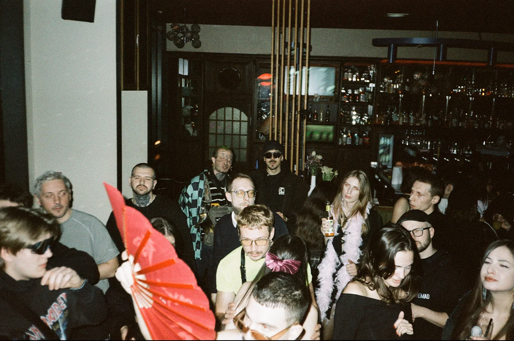
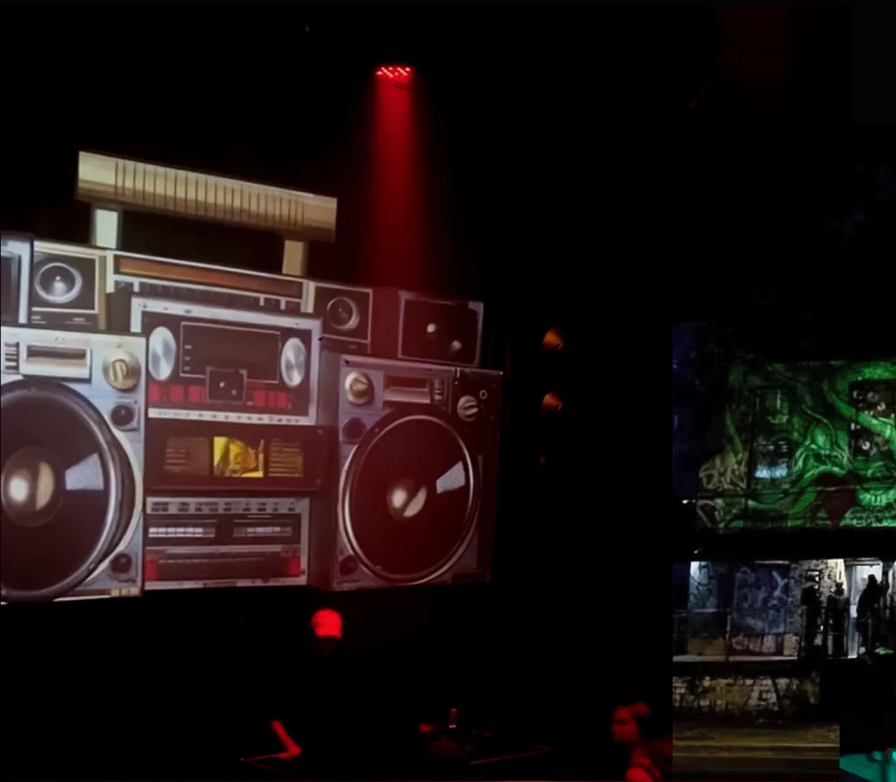
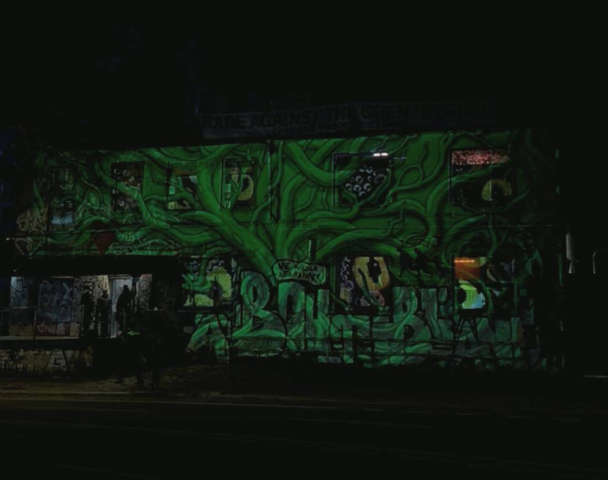
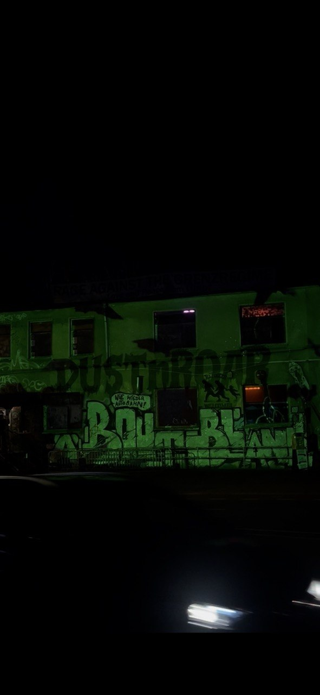

OCTOBER 2026 · MADAME CLAUDE
HOLYWORLD
~150 guests across two floors
For Tag der Clubkultur, we staged a two-floor takeover, from the outfits and set design to a browser game made for the night.


HOLYBERG is a Kyiv-rooted, Berlin-based collective operating somewhere between a psychedelic fever dream and a slow bass-heavy dancefloor.
Slow, hypnotic, broken beats, bizarre costumes, absurd promo concepts and a healthy obsession with turning ordinary club nights into something a little surreal.
Born from Kyiv’s underground scene and shaped by a community of friends, HOLYBERG creates its own strange little universe — where music, visual experiments and questionable ideas somehow make perfect sense.
Expect unexpected encounters and just the right amount of beautiful chaos.
In 2024, the most part of us arrived straight from Kyiv, leaving behind a series of both successful and intimate local parties. We brought our previous experience with us and fused it with something new. Along the way, we found our family — people who resonated with the space we create — and that’s how the HOLYBERG formation was born.
Meet the residents & team

We never tried to push ourselves through marketing. Friends, friends of friends — people who came and chose to stay with us. That’s our path, and it’s true.


From the very first months in Berlin, we found ways to express ourselves — and every party, every piece of feedback only confirmed one thing: we have

Expect deep, bass-heavy, hypnotic and wild electro, breakbeat, indie dance and trip-hop, with a healthy dose of bass, disco, dark disco and KDM (Koabo Dance Music).
Co-organiser, DJ & producer
Co-organiser & DJ
Creative team, DJ & producer
DJ & producer
DJ
DJ
Styling, costumes, door & awareness
Videography & camera
Mixes by a founding member have appeared on DarkDisco.org, Disco Suicide and Berlin label Crave Tapes.
Shared lineups with artists from Berlin's underground electronic music scene, including Carlos GrabStein, Desolate Discotheque, Alessandro Adriani, Yoshi (DE) and HYPNOTIC.ERA.

We are proud of our visual identity and the creative projects we’ve managed to bring to life. We created many things using whatever we had at hand — with no budget and no idea of “how it’s supposed to be done.” But we definitely had a vision and drive.
 Madame Claude
Madame Claude
 Madame Claude
Madame Claude
 HOLYBERG team, residents and friends · Gentrif*ckdich Vol. 3
HOLYBERG team, residents and friends · Gentrif*ckdich Vol. 3



Projection by HOLYBERG on the façade of ://about blank
HOLYBERG projection · ://about blank exterior


 Installing the HOLYWORLD game at Madame Claude
Installing the HOLYWORLD game at Madame Claude
 Disus behind the scenes of the Madame Claude promo
Disus behind the scenes of the Madame Claude promo
We produce full club nights and curate individual floors with our residents, guest artists and visuals. Our Berlin crowd is mostly Ukrainian and typically aged 25–35.
DOWNLOAD PRESS KIT (PDF)OCTOBER 2026 · MADAME CLAUDE
~150 guests across two floors
For Tag der Clubkultur, we staged a two-floor takeover, from the outfits and set design to a browser game made for the night.
MAY 2026 · ://ABOUT BLANK
1 floor curated for Dust’n’Roar
We curated a dedicated floor featuring our residents and guest artists and supported the event's promotion.
DECEMBER 25, 2025 · WILDER ALS ERWARTET · BERLIN
100 guests
The first night that brought the HOLYBERG world together in Berlin. We raised €300 towards an evacuation vehicle for Ukraine.
JULY 18, 2025 · WHOROSCOPE BAR · BERLIN
80 guests
Preparing HOLYBERG Game…
Rotate your phone for the game.
Open the game in a new tab ↗